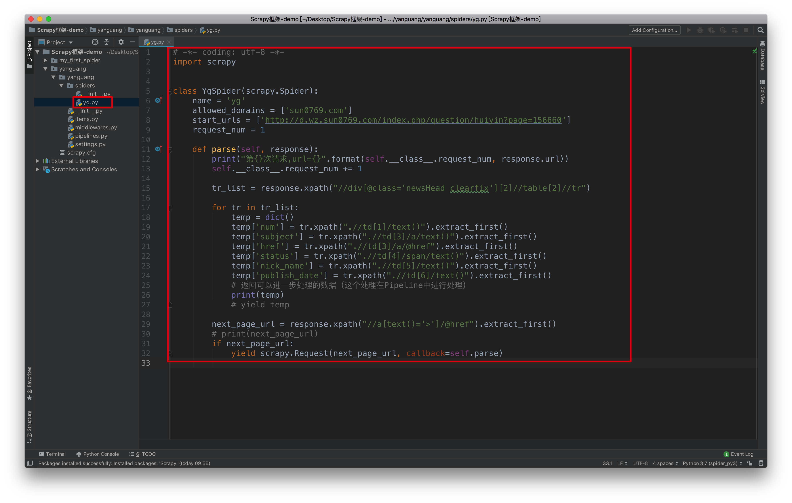
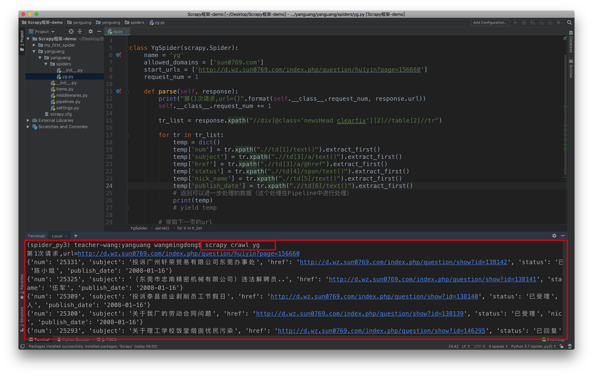
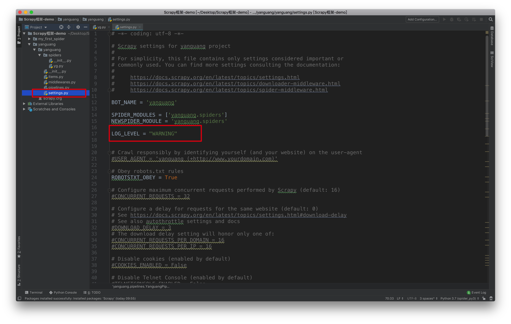

案例：阳光工程-1-下一页
学习目标：
- 应用 构造Request对象，并发送请求
- 应用 利用meta参数在不同的解析函数中传递数据
1. 翻页请求的思路
对于要提取如下图中所有页面上的数据该怎么办？

回顾requests模块是如何实现翻页请求的：
- 找到下一页的URL地址
- 调用
requests.get(url)
scrapy实现翻页的思路：
- 找到下一页的url地址
- 构造url地址的请求对象，传递给引擎
2. 构造Request对象，并发送请求
实现方法
- 确定url地址
- 构造请求，
scrapy.Request(url,callback)- callback：指定解析函数名称，表示该请求返回的响应使用哪一个函数进行解析
- 把请求交给引擎：
yield scrapy.Request(url,callback)
3. 东莞阳光网爬虫
3.1 思路分析：
- 获取首页的数据
- 寻找下一页的地址，进行翻页，获取数据
3.2 注意：
- 可以在settings中设置ROBOTS协议
# False表示忽略网站的robots.txt协议，默认为True
ROBOTSTXT_OBEY = False
- 可以在settings中设置User-Agent：
# scrapy发送的每一个请求的默认UA都是设置的这个User-Agent
USER_AGENT = 'Mozilla/5.0 (Macintosh; Intel Mac OS X 10_12_5) AppleWebKit/537.36 (KHTML, like Gecko) Chrome/59.0.3071.115 Safari/537.36'
3.3 scrapy.Request的更多参数
scrapy.Request(url[,callback,method="GET",headers,body,cookies,meta,dont_filter=False])
参数解释
- 中括号里的参数为可选参数
- callback：表示当前的url的响应交给哪个函数去处理
- meta：实现数据在不同的解析函数中传递，meta默认带有部分数据，比如下载延迟，请求深度等
- dont_filter:默认为False，会过滤请求的url地址，即请求过的url地址不会继续被请求，对需要重复请求的url地址可以把它设置为Ture，比如贴吧的翻页请求，页面的数据总是在变化;start_urls中的地址会被反复请求，否则程序不会启动
- method：指定POST或GET请求
- headers：接收一个字典，其中不包括cookies
- cookies：接收一个字典，专门放置cookies
- body：接收json字符串，为POST的数据，发送payload_post请求时使用（在下一章节中会介绍post请求）
3.4 参考代码
yg.py

# -*- coding: utf-8 -*-
import scrapy
class YgSpider(scrapy.Spider):
name = 'yg'
allowed_domains = ['sun0769.com']
start_urls = ['http://d.wz.sun0769.com/index.php/question/huiyin?page=156660']
request_num = 1
def parse(self, response):
print("第{}次请求,url={}".format(self.__class__.request_num, response.url))
self.__class__.request_num += 1
tr_list = response.xpath("//div[@class='newsHead clearfix'][2]//table[2]//tr")
for tr in tr_list:
temp = dict()
temp['num'] = tr.xpath(".//td[1]/text()").extract_first()
temp['subject'] = tr.xpath(".//td[3]/a/text()").extract_first()
temp['href'] = tr.xpath(".//td[3]/a/@href").extract_first()
temp['status'] = tr.xpath(".//td[4]/span/text()").extract_first()
temp['nick_name'] = tr.xpath(".//td[5]/text()").extract_first()
temp['publish_date'] = tr.xpath(".//td[6]/text()").extract_first()
# 返回可以进一步处理的数据（这个处理在Pipeline中进行处理）
print(temp)
# yield temp
# 提取下一页的url
next_page_url = response.xpath("//a[text()='>']/@href").extract_first()
# print(next_page_url)
if next_page_url:
yield scrapy.Request(next_page_url, callback=self.parse)
运行效果：

setting.py
